We all know it: your witnesses and bridesmaids are not "just there to look pretty in the photos". They are your allies, your emotional support, your last-minute organisers, your anti-stress safety net… and sometimes even your official therapists during the preparations.
Because planning a wedding, whether in Bordeaux, at an estate in the Médoc, on the Arcachon Bay or elsewhere in Nouvelle-Aquitaine, is not just about choosing a dress and a caterer. It also means handling emotions, surprises, doubts, and sometimes moments of panic in front of a seating plan.
And through it all, your witnesses and bridesmaids are there. They answer messages at any hour, come with you to fittings, organise the hen party, handle the little emergencies on the day, and remind you to breathe when you are about to crack.
So why give them a simple "Team Bride" tote bag and a random lip gloss?
Spoiler: they deserve better.
Today, as a wedding planner in Bordeaux, I am sharing a very on-trend and, above all, very touching idea: the Experience Kit, a box designed to turn their role into a memorable adventure. Not just objects, but a real gesture. A way of saying: "I want you to live this with me, and I want you to feel important."
Why give your witnesses an Experience Kit?
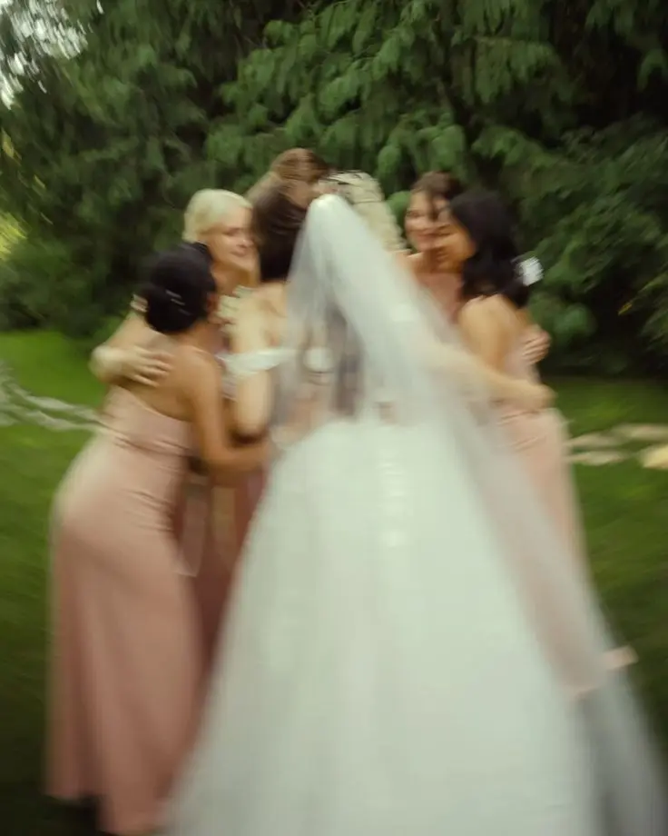
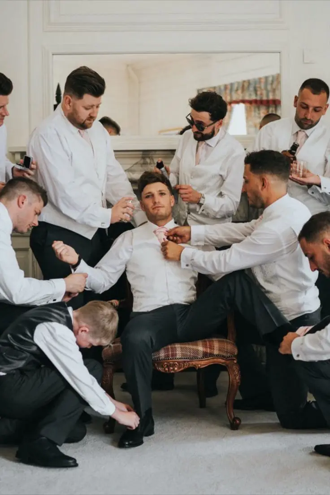

Giving your witnesses and bridesmaids an Experience Kit is not just a trendy idea: it is a meaningful gesture that immediately gives their role significance. Today, more and more couples want to go beyond a simple token gift and create a real moment of emotion at the start of the preparations.
This kind of box is an elegant way to mark the occasion and make the official ask far more memorable. Instead of a quick message or a simple "Will you be my witness?", you turn the announcement into a precious moment they will never forget.
It is also an excellent way to build team spirit from the start. A wedding is an adventure that unfolds over several months, sometimes more than a year, and your witnesses are among the people most involved during that time. Giving them a well-thought-out kit brings them fully into the planning and strengthens your bond. It gives the group a positive dynamic and creates a close, fun atmosphere around the preparations.
Another important benefit is the keepsake. The Experience Kit becomes something your witnesses will keep, and that will remind them of this unique period. It also makes for lovely photos and spontaneous moments, especially when they discover the box or at key moments such as the hen party or the morning of the wedding.
This gift is also a powerful way to honour their role. Being a witness or bridesmaid is not just about signing the register or wearing a matching outfit. It means being there, reassuring, helping, organising and sometimes handling the unexpected. A personalised kit shows that you recognise their commitment and give them an essential place in your wedding.
Finally, and this is often underestimated, the kit can genuinely make your life easier. A well-prepared witness is an effective witness. By giving them useful items, information or even a clear "mission" from the start, you lighten your mental load and make sure you are surrounded by people ready to support you in practical ways.
In short, giving a witness Experience Kit is a modern, practical and emotional idea. It is a gift that builds connection, marks the start of the preparations and turns their presence by your side into a real experience. A simple yet powerful gesture that makes your wedding even more unique.
The original list of things to put in your kit (with the real "why")
1. A personal letter (essential)
Yes, it is simple. But it is clearly the heart of the experience kit.
It is even the most important element, the one that turns a simple box into a deeply emotional gift.
A personal letter makes the official ask far more meaningful. It gives your gesture significance and shows your witness or bridesmaid that they were not chosen at random. It is not a "practical role", it is a special place in your story.
Why it matters
Because an object can be pretty, useful or trendy… but a letter goes straight to the heart. It is often the one thing they will keep for years, sometimes for a lifetime. It becomes an intimate, precious keepsake that they will reread with emotion long after the wedding.
It is also a way to create a powerful moment right at the start of the preparations. Before the fittings, the hen party or the big day, you build a sincere, authentic connection with your team.
Wedding planner tip
For the letter to have real impact, avoid generic phrases. Be specific, personal, and speak from the heart.
You can write a simple but powerful sentence such as:
"I chose you because…"
Then follow with one or two concrete qualities or memories: a time this person supported you, an anecdote, a defining moment in your friendship or relationship.
It is this kind of detail that makes the letter unique, and that often triggers an immediate reaction: a smile, emotion… and sometimes even a few tears.
In short, the personal letter is much more than a note: it is proof that their role really matters and that you want to share this adventure with them, fully.
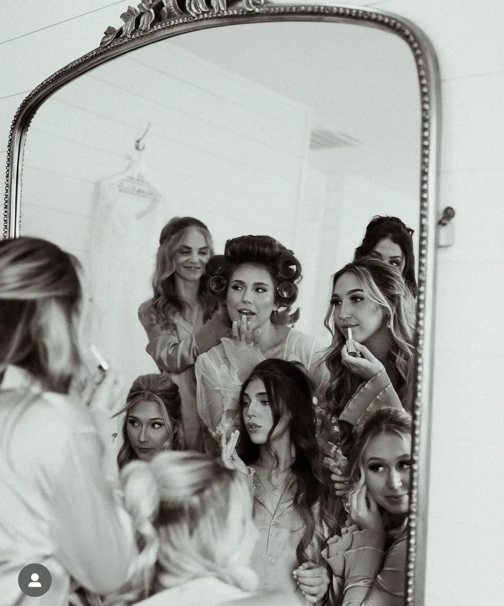
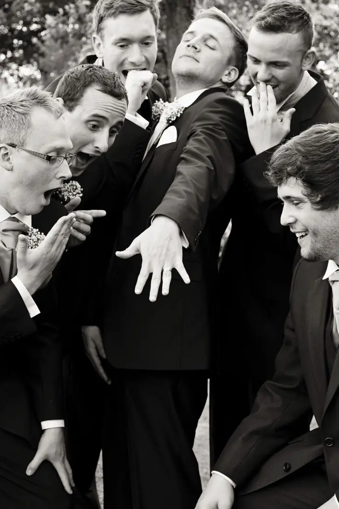

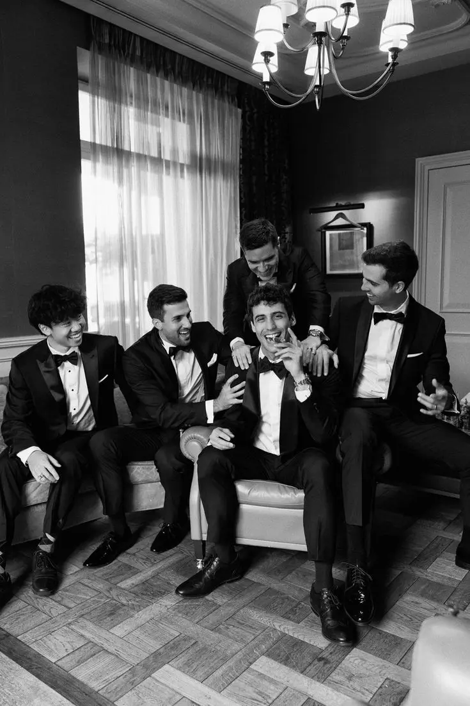
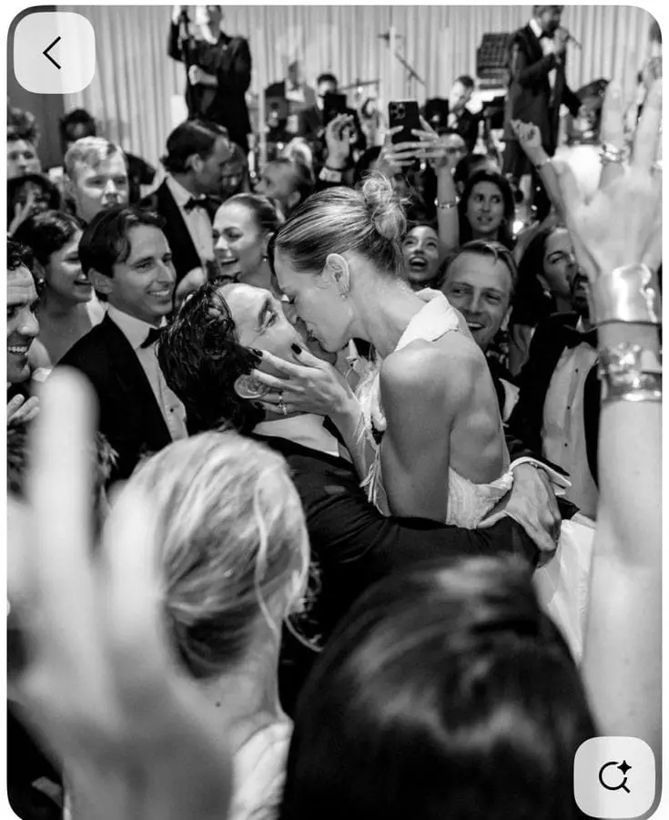
2. A mini "mission card": their role explained in a fun way
Among the most original ideas to slip into a witness or bridesmaid experience kit, the "mission card" always goes down well. The idea is simple: a small, beautifully printed card listing their official missions during the preparations and on the wedding day.
It can be presented as a secret agent card, an elegant checklist or even a wedding-style "job description".
Examples of missions to include
Keep the bride calm (and remind her she looks stunning, even mid stress-crisis)
Check the lipstick and beauty touch-ups
Handle the little last-minute emergencies
Make sure everyone is on time
Keep the toxic ex at bay (optional… but often useful)
The idea is to keep it light, funny and affectionate, while showing them they have an important role to play.
Why it is a great idea
Because the card takes the pressure off. It turns a sometimes daunting responsibility into a fun, almost flattering mission. Your witnesses feel involved, useful and, above all, proud to be "on the team". It is also a subtle way to give them guidance. Some witnesses do not always know exactly what is expected of them, and this card helps them understand their role without pressure.
It is also a detail people love in the moment, because it instantly creates a joyful, lively atmosphere. They feel as if they are literally "in the movie", officially stepping behind the scenes of your wedding.
Wedding planner bonus
For an even more beautiful result, you can add a humorous tone, a little slogan or a colour code that matches your wedding theme. This makes the mission card even more personal and consistent with the style of your event. It is a small, simple object, but it leaves an impression and strengthens team spirit from the very start of the preparations.
3. A "wedding memories" notebook
Giving your witnesses or bridesmaids a beautiful personalised notebook is much more than a simple object. It is a space where they can record every important stage of your wedding, turn the moments they share with you into tangible memories and keep a unique record of the adventure.
In this notebook, they can jot down anecdotes from the preparations, ideas for the hen or stag party, their emotions on the day and personal messages for you. Each page becomes a living testimony of their involvement and their role in your wedding.
Why give your witnesses and bridesmaids a notebook? Because they live the story alongside you, and this notebook can quickly become an emotional treasure, something they will cherish for years and that will remind them of your bond and how much their presence mattered.
To go further, you can choose a premium version of the notebook, with a special "promise" or "wish for the couple" page where they can write a few words to accompany you into your new life together. This turns the notebook into a truly personalised keepsake, both sentimental and precious, and strengthens the unique bond you share with your witnesses.
A wedding memories notebook is therefore not just a practical object for planning and note-taking: it is a powerful symbol of gratitude and affection that makes your witnesses and bridesmaids key players in your celebration.


4. A mini wedding SOS kit (the chic survival kit)
The mini wedding SOS kit, also known as the chic survival kit, is a must for your witnesses and bridesmaids. It is a small, carefully prepared pouch containing everything needed to deal with surprises on the day. You can include plasters, safety pins, a mini deodorant, chewing gum, tissues, stain-remover wipes, a mini anti-fog spray for glasses and even a small sewing kit for wardrobe emergencies.
Why give your witnesses and bridesmaids a wedding SOS kit? Because a wedding, however beautiful and memorable, can sometimes turn into a real emotional and textile war zone. Snagged dresses, broken heels, running make-up or fogged-up glasses… all small incidents that can become stressful if nobody is prepared.
Giving a mini wedding SOS kit shows your witnesses that they have an important, responsible role. It is a strong symbol: that of a witness ready for anything, able to handle little crises and help you fully enjoy every moment without stress. The kit turns their mission into a concrete, rewarding experience while adding an elegant, practical touch to their role.
With this kit, your witnesses and bridesmaids will feel useful, prepared and fully involved in your celebration, which will strengthen their commitment and enthusiasm throughout the preparations and on the day.
5. A "wedding prep" candle
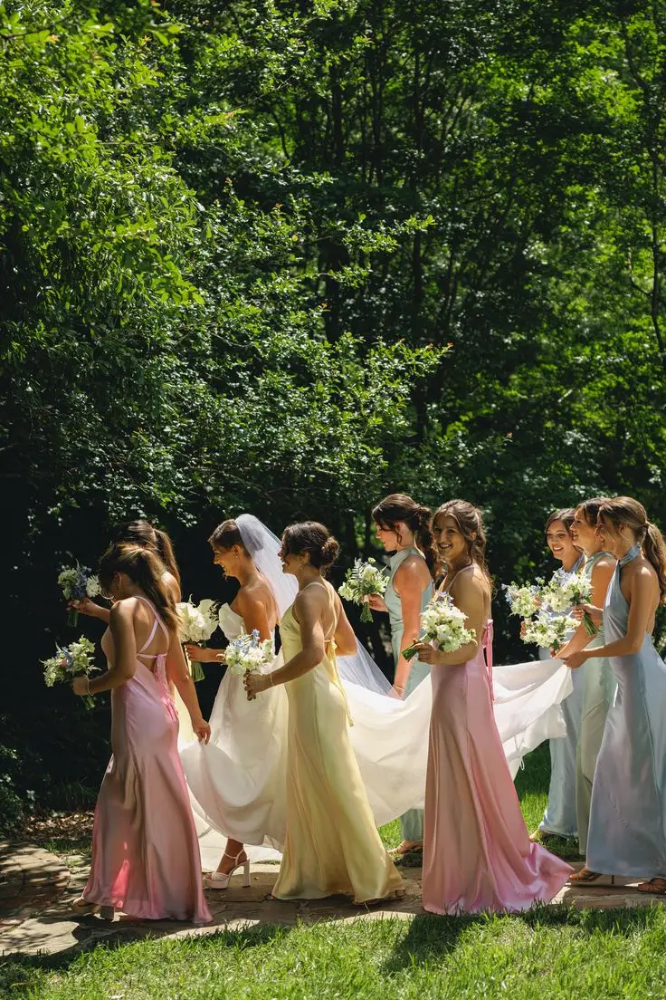
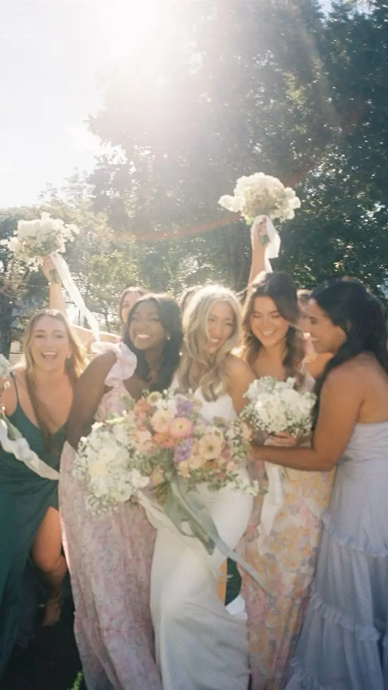
Giving your witnesses and bridesmaids a personalised candle may seem simple, but it is actually a very symbolic gesture. The candle becomes a precious little ritual during the wedding preparations, a moment to refocus and connect with you before the big day. You can add a personalised label with a funny or tender message, for example: "To survive the moodboards, the seating plans and the existential crises."
Why give your witnesses a candle? Because it creates an emotional ritual. When they light it, they feel involved in your preparations and connected to your story. It is a simple but effective way to show them they have an important role and are part of this unique adventure.
To complete the experience, choose a delicate, elegant scent that evokes the world of weddings. Recommended scents include cotton, vanilla or white flowers, soft, timeless fragrances that bring a sense of calm and well-being during the preparations.
A "wedding prep" candle is therefore not just a decorative object: it is a symbol of gratitude, care and sharing. It turns a simple moment into a memorable keepsake for your witnesses and bridesmaids, and remains a small reminder of your bond long after the wedding.
6. A printed playlist or "Team Wedding" QR code
Giving your witnesses and bridesmaids a personalised playlist is an original idea that combines practicality and emotion. You can prepare a small card with a Spotify QR code or a USB key with carefully chosen tracks to accompany every stage of your wedding. The playlist can include songs for the hen party, relaxing music to unwind, an "anti-stress" selection and even upbeat tracks to dance to and get ready to shed a few happy tears.
Why give your witnesses a playlist? Because music has a unique power to anchor memories. Each song will become a little time capsule that reminds your loved ones of the highlights of your preparations and the big day. The chosen songs will recall the energy of the rehearsals, the giggles at the fittings and the closeness shared at the hen or stag party.
A personalised playlist turns your witnesses' role into a complete sensory experience. They will feel involved in your wedding in an original, personal way, while having a lasting keepsake they can listen to long after the celebration. It is a small, simple gesture, but one that creates strong emotions and memorable moments, strengthening their connection to your story and your exceptional day.

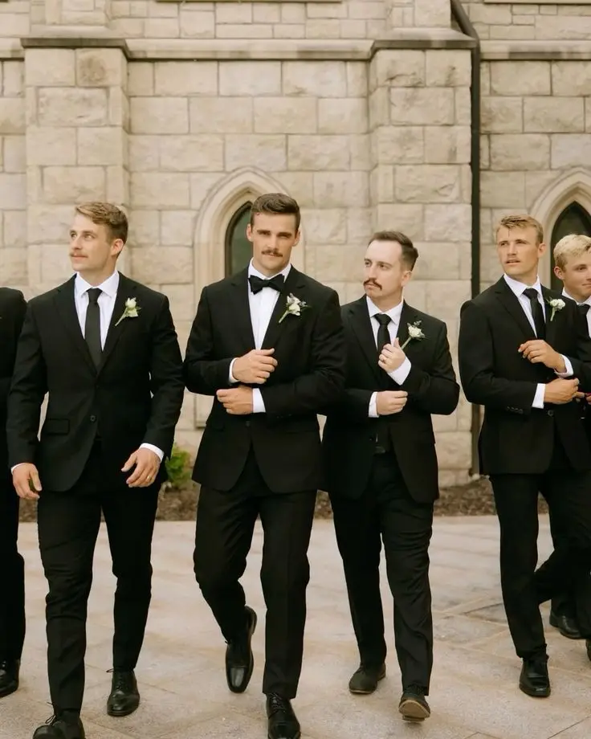
7. An accessory to wear on the day (but elegant)
For your witnesses and bridesmaids, giving an elegant accessory to wear on the day is a subtle way to create unity and style without tipping into kitsch or fancy dress. Instead of traditional badges or loud accessories, opt for refined, discreet pieces that complement their outfit while highlighting their important role in your wedding.
Accessory ideas include: a discreet bracelet, a delicate brooch, a modern buttonhole, a personalised silk ribbon or a mini scarf. Each piece can be chosen to match your theme, your colour palette and the overall mood of your celebration.
Why give an accessory to wear on the day? Because it creates visual cohesion in the photos while honouring your witnesses. They feel chosen, recognised and fully part of the important role they play. These small details add elegance, strengthen the sense of belonging to your team and make every photo more harmonious and memorable.
Giving your witnesses a chic accessory therefore combines beauty, emotion and usefulness, while making their presence a true symbol of your bond and your gratitude. It turns a simple detail of their outfit into a meaningful gesture they will always remember.
8. A mini "official toast" bottle

Giving your witnesses and bridesmaids a mini bottle for the official toast is both elegant and symbolic. It could be a small champagne, a mini prosecco, a cocktail in a vial, a miniature of gin or whisky, or a refined alcohol-free alternative for those who prefer not to drink. The aim is not just to share a drink, but to create an intimate, memorable moment of celebration before the big day.
Why give your witnesses and bridesmaids a mini bottle? Because it marks the official start of your shared journey towards the wedding. By raising a glass with you, your loved ones feel a unique sense of closeness and active involvement. The mini bottle becomes the symbol of "we're a team", a little ritual that reminds you that you are in this adventure together, with enthusiasm and kindness.
This gesture turns a simple moment into a lasting memory. Every time your witnesses open the little bottle, they will remember the preparations, the shared laughter and the collective energy that surrounded your wedding. It is a simple yet very meaningful way to show your gratitude and strengthen the emotional bond between you.
9. A "voucher" for something to do together
Giving your witnesses or bridesmaids a voucher for something to do together is an original, meaningful idea. It could be a little coupon for a post-wedding brunch, a sleepover to debrief or even a spa day once all the preparations are over. The goal is not just to plan an activity, but to extend the bond you have built with your loved ones throughout the wedding adventure.
Why give your witnesses and bridesmaids a voucher? Because a wedding should not be a stressful race, and these shared moments are precious. This small gesture sends a clear message: "I want to share moments with you too, not just ask for your help." It is a way to thank your witnesses for their presence, support and commitment throughout the preparations.
A voucher for a shared experience turns a simple gift into an emotional experience, strengthening your closeness and creating memories that will last long after the day. It reminds your loved ones that they are an integral part of your story and that their role goes beyond official duties, making your relationship a truly shared adventure.
10. A keepsake photo or a mini frame
Including a keepsake photo or a mini frame in your witnesses' and bridesmaids' experience kit is a simple but extremely touching gesture. You can choose a photo of the two or three of you, or give a small empty frame with the words "Photo to add after the wedding". This gesture instantly turns the kit into an object full of emotion and memories to come.
Why give a photo or a frame? Because it immediately brings emotion to the box and reminds your witnesses that your relationship with them is at the heart of your adventure. Beyond their official role, this photo symbolises the closeness, friendship and unique bond you share. It is a small, tangible reminder of their importance in your story and of their part in your most precious moments.
A frame or keepsake photo thus becomes both a symbolic and a practical object. Your witnesses can add a picture from the wedding, creating a lasting memory they will cherish for a long time. It is an elegant way to show your gratitude and make their role in your wedding all the more memorable.
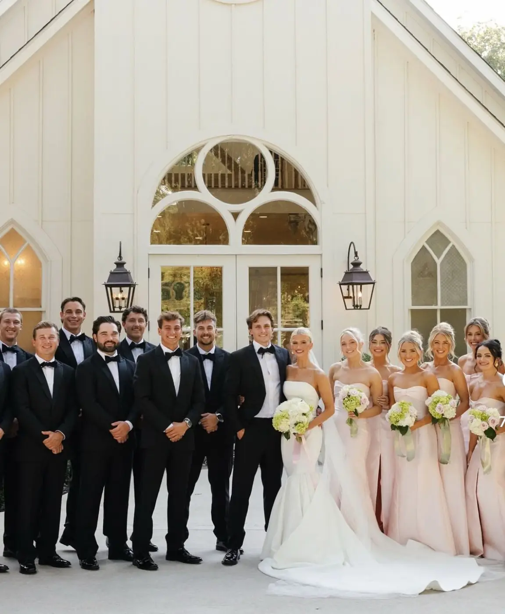
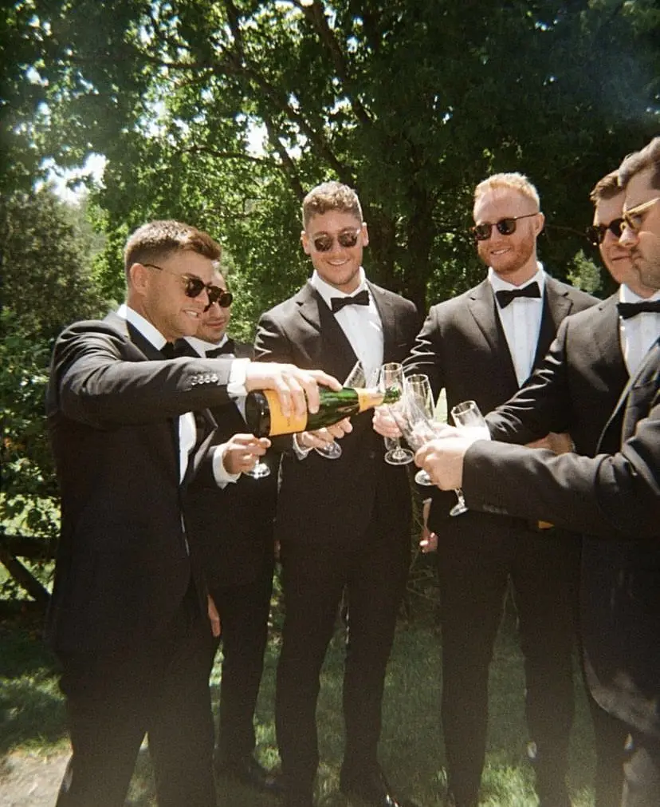
11. A "signature" object that represents them
To take the personalisation of your experience kit even further, giving a signature object suited to each witness's or bridesmaid's personality is an original and very touching idea. It could be a chic hair clip for the fashionista friend, a mini tarot deck for the group's mystic, an engraved keyring for the quiet one, a luxury lip balm for the glamorous one, a mini deck of cards for the joker or a small piece of jewellery for the sensitive one.
Why include a signature object in the kit? Because it shows you took the time to think about each of your witnesses individually, and that this kit is not a generic gift found on Pinterest. It becomes a personalised, symbolic object that reflects each person's personality and tastes.
This signature object makes your witnesses feel recognised and valued, while adding a playful, emotional dimension to the kit. It is a detail that leaves an impression and strengthens the unique bond you share with them. A carefully chosen object turns a simple gift into a memorable keepsake and makes your witnesses and bridesmaids essential players in the story of your wedding.
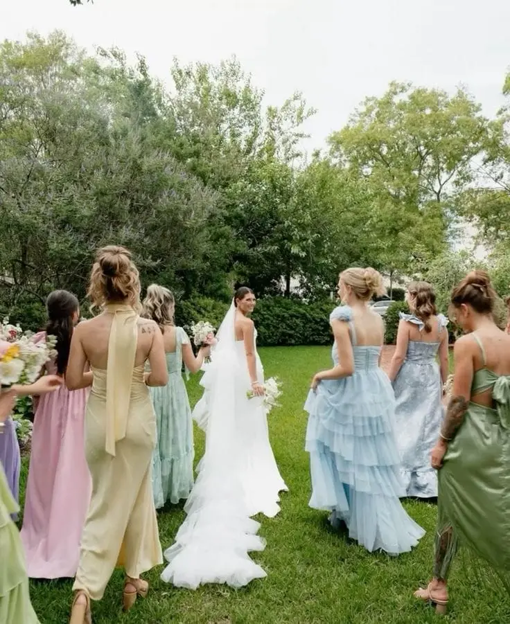

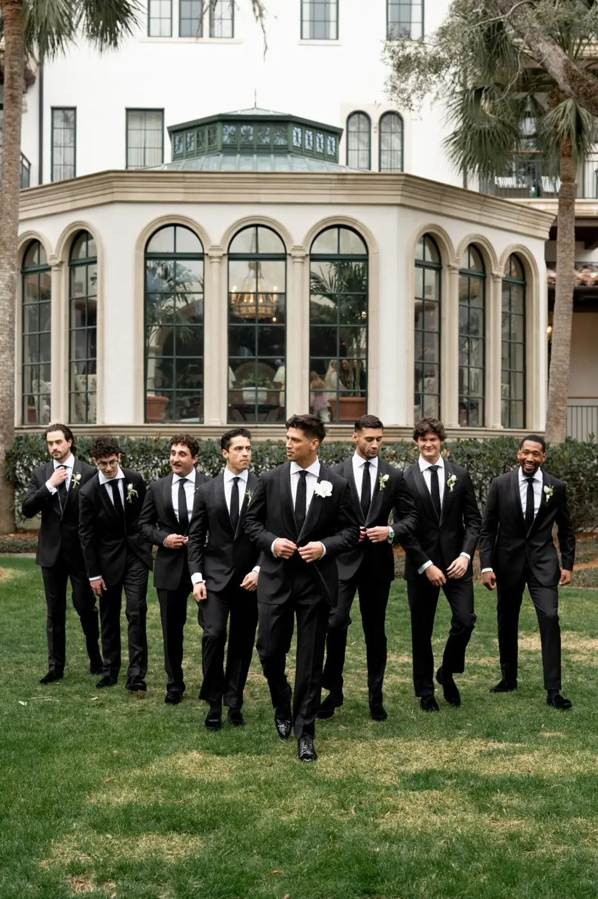
12. A "VIP access" card
To finish your experience kit, a "VIP access" card is an original, fun and memorable idea. It is a mock backstage pass that celebrates the role of your witnesses and bridesmaids with humour and creativity. You can add personalised lines such as "Backstage access – official witness", "Authorised to handle the bride in case of panic" or "Head of champagne".
Why include a VIP card in the kit? Because it makes their role concrete and rewarding, while adding a playful, fun dimension. This small gesture turns a simple object into a memorable keepsake and makes your witnesses feel officially involved in your wedding.
Beyond the symbolism, the "VIP access" card is also perfect for photos. It adds a quirky, humorous touch that makes everyone smile and captures their unique role in your preparations and on the day. It is a simple but effective way to strengthen their sense of importance and closeness with you, while bringing some fun to your experience kit.
The little extras that maximise the "wow" effect
To make your experience kit truly memorable, it is often the details that make all the difference. A personalised box or pouch with each witness's name, a colour code that matches your wedding theme, or a small dried flower or sprig of eucalyptus instantly add an elegant, refined touch.
You can also think of a velvet or satin ribbon to close the box, or a personalised tag with a message such as "You are part of my story". These little touches give the feel of a luxury, high-end gift, even on a reasonable budget.
These details heighten the "wow" effect the moment the kit is opened, create emotion and show your witnesses and bridesmaids that every element has been chosen with care and sincerity. They will feel valued, privileged and fully part of your wedding, making the experience far more personal and unforgettable.
A kit prepared with these little touches turns a simple gift into a lasting keepsake that will stay with them long after the day.
Minimal kit, premium kit: ideas for what to include


To help you create your experience kit for witnesses and bridesmaids, it can be useful to distinguish two types of kit depending on your budget and the impact you want: a minimal kit, simple and practical, and a premium kit, more complete and emotional.
The minimal kit, ideal for a reasonable budget, includes the essentials so your witnesses feel involved and valued. It can include a personal letter, a mission card explaining their role in a playful way, a mini candle to create a ritual during the preparations, a small SOS kit for surprises on the day, and an elegant accessory to wear at the wedding. This simple but well-thought-out kit marks the moment and creates memories while staying affordable.
The premium kit, on the other hand, is designed for an "I cried when I opened it" effect and to turn your witnesses' role into a truly memorable experience. It can include the personal letter with a photo, a memories notebook for anecdotes and emotions, a mini bottle with a playlist QR code, a piece of jewellery or elegant accessory, a personalised VIP card and a voucher for an experience to share after the wedding. This complete kit combines emotion, practicality and fun, and creates a lasting keepsake your witnesses and bridesmaids will always remember.
Choosing between a minimal or premium kit depends on your budget, but what matters is showing your witnesses that their role is meaningful, that they are an integral part of your story and that you want to give them a unique, unforgettable experience.
When to give the kit?
Knowing when to give your experience kit is as important as what is in it, because timing can heighten the emotional effect and the closeness with your witnesses and bridesmaids. The best time is usually 6 to 10 months before the wedding, which lets you launch the preparations in a festive way and build a real team spirit from the start.
Other options are possible too, depending on your planning and wedding style. For example, you can give the kit at an "official announcement" dinner, turning the ask into an unforgettable moment. A surprise evening can also be the perfect occasion, adding extra emotion and plenty of fun. Finally, if your witnesses live far away, delivering the kit with a video call can create just as much emotion and strengthen the bond, even at a distance.
What matters is choosing a moment when your witnesses feel valued and involved, and when the gesture becomes the starting point of a shared adventure full of memories and emotion. Giving the kit at the right time not only surprises them but also lays the foundation for strong closeness and commitment throughout the preparations and on the day.
The real secret of a successful kit
The real secret of an experience kit for witnesses and bridesmaids does not lie in the material value of what you put in it. It is not the luxury of the accessories or the number of items that makes this gift memorable. What makes all the difference is the message behind the gesture.
Giving a kit means telling your witnesses and bridesmaids: "I don't want you to just be there. I want you to be part of the adventure." It is this message that turns their role into an emotional experience and makes them feel truly part of your wedding.
When your witnesses understand that their presence is valued and their role is essential, they become much more than logistical support. They become a close-knit team, ready to share laughter, emotion and moments of stress with you, while creating unforgettable memories.
A well-thought-out kit is therefore not just a gift: it becomes a symbol of closeness, recognition and gratitude. That is exactly what turns a simple gesture into an unforgettable experience, and what means your wedding will live on not only in your memories, but in those of your witnesses and bridesmaids for a lifetime.
In short,
Giving your witnesses and bridesmaids an Experience Kit goes far beyond a simple material gift. It gives them an official place in your story, a way of showing them they are key players in your wedding and not mere spectators.
This elegant, funny, tender and personal gesture turns the ask into a memorable moment and makes your witnesses fully involved in every stage of your adventure. Every object chosen, every detail carefully considered, every little touch becomes a token of gratitude and a way to strengthen the closeness and unique relationship you share with them.
And between us, it is often these little touches that make a wedding much more than a one-off event. They turn the preparations and the day itself into a true shared adventure, full of memories, emotions and moments that will stay with you… and with your witnesses and bridesmaids, forever.
A well-thought-out kit is therefore not just a gift: it is an unforgettable experience, a tangible keepsake and a symbol of love, friendship and gratitude that accompanies your loved ones throughout this exceptional adventure.
Lovely Day Event offers several services
Wedding planning
I will be involved at every stage of your preparations and guide you through your choices. I come up with ideas so that your wedding looks like no one else's.
Wedding styling
Creative and passionate, I am a certified Wedding Designer and I create a scenographic atmosphere that matches your wedding theme.
On-the-day coordination
I will be the conductor, managing your suppliers, the set-up of your decor and the flow of your beautiful day.